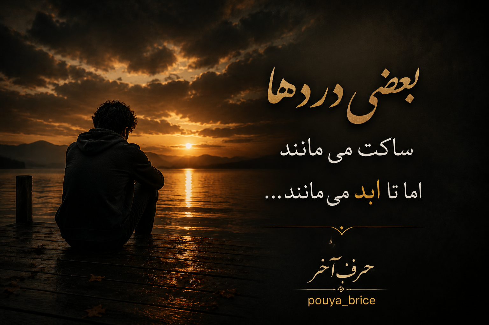
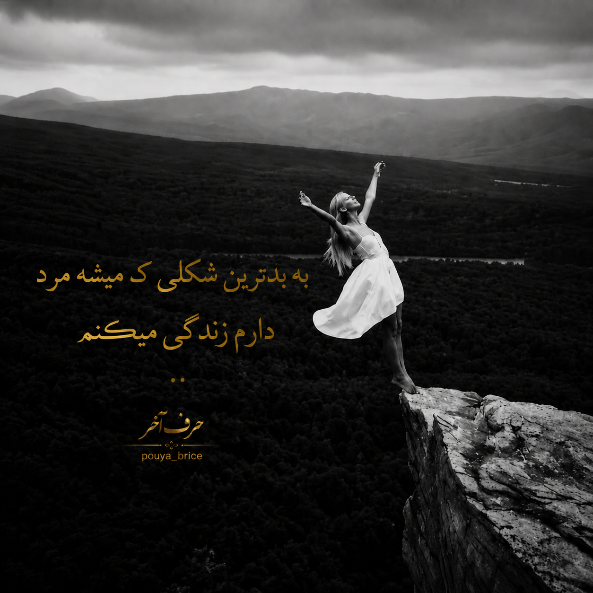

نوشتههای احساسی برای لحظههای دلتنگی


بعضی دردها ساکت میمانند، اما تا آخر عمر در قلب آدم زندگی میکنند.
گاهی دلتنگ کسی میشوی که دیگر نمیتوانی به او بگویی چقدر دلتنگش هستی.
سختترین لحظهها زمانی هستند که لبخند میزنی اما قلبت آرام نیست.